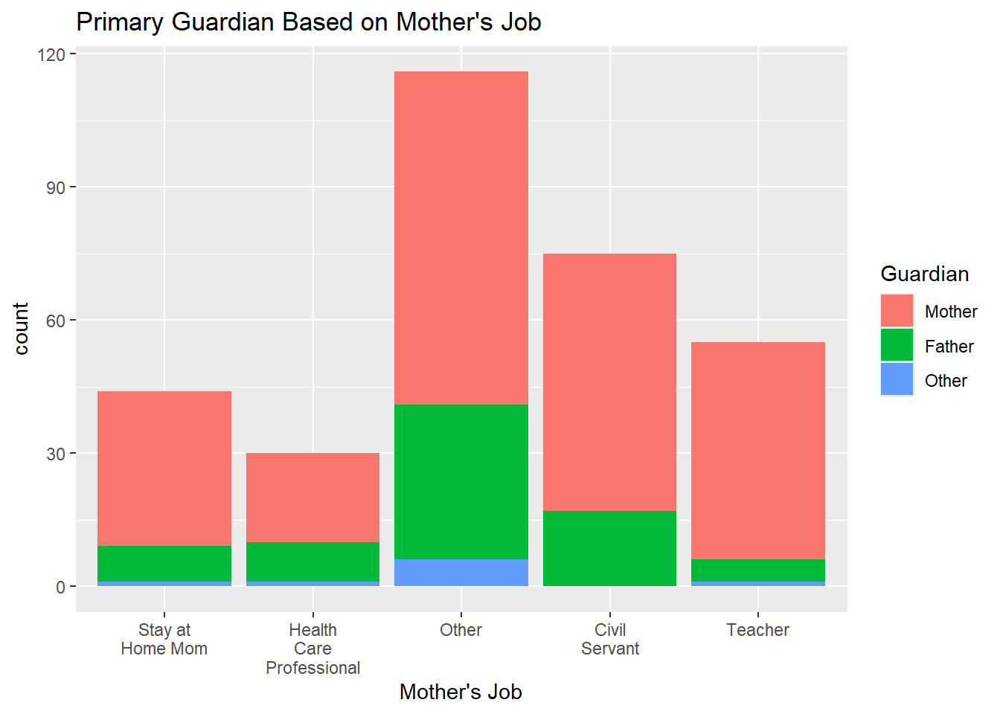
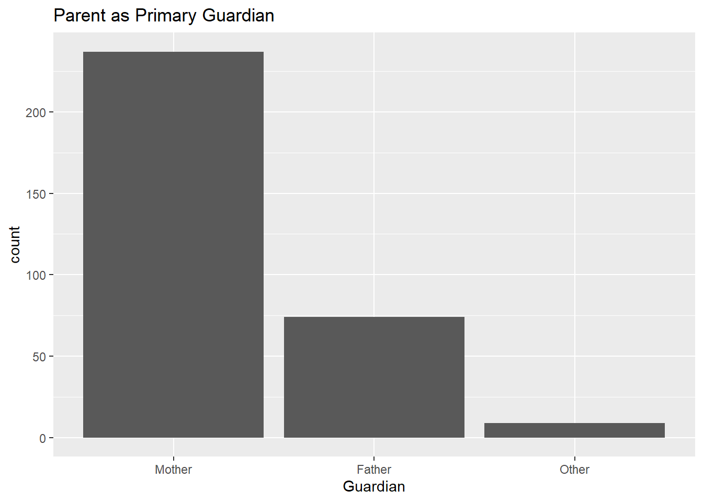
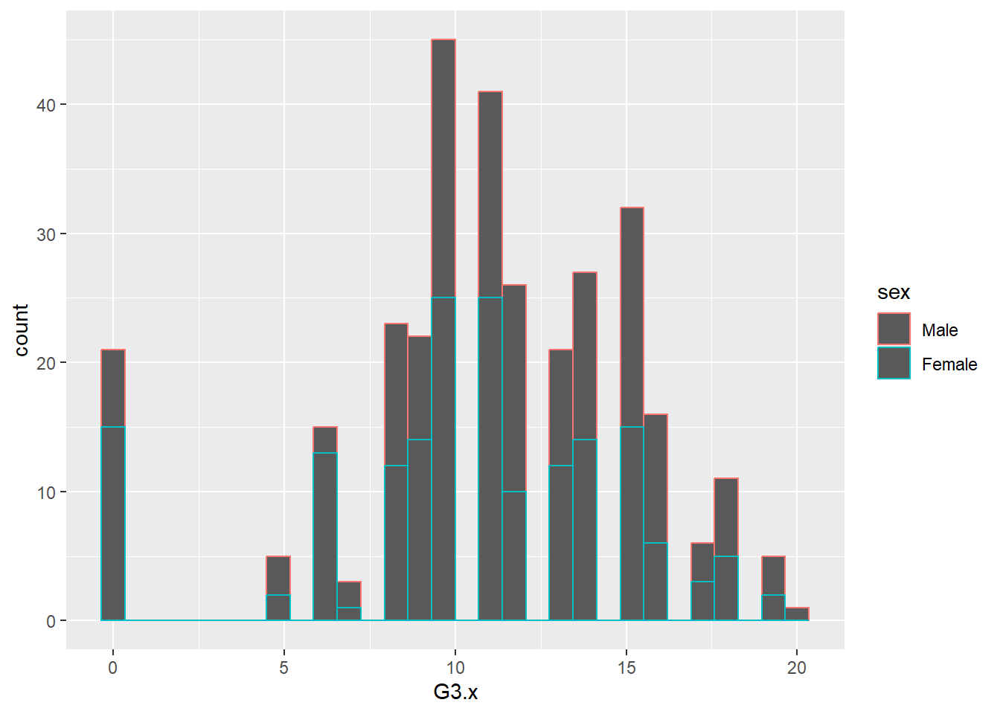
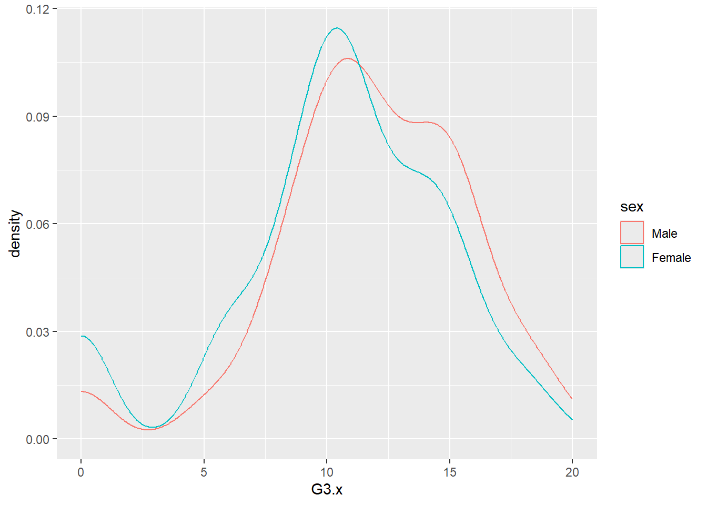
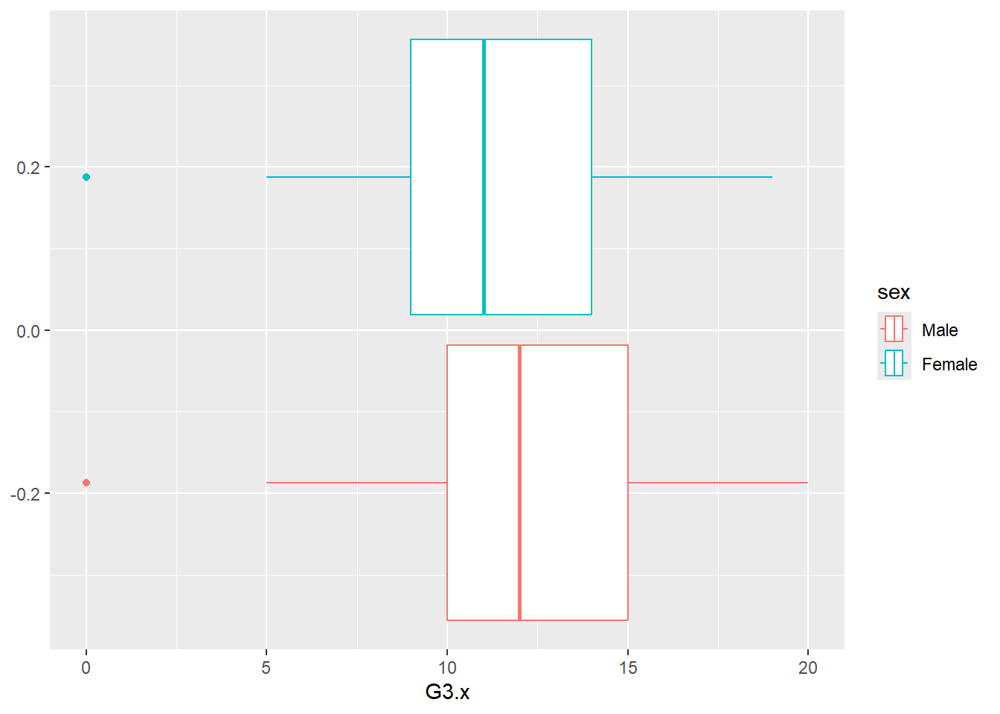
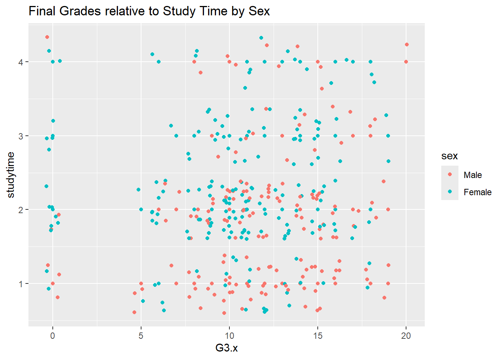
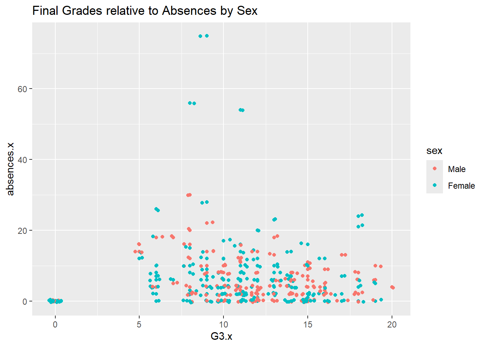
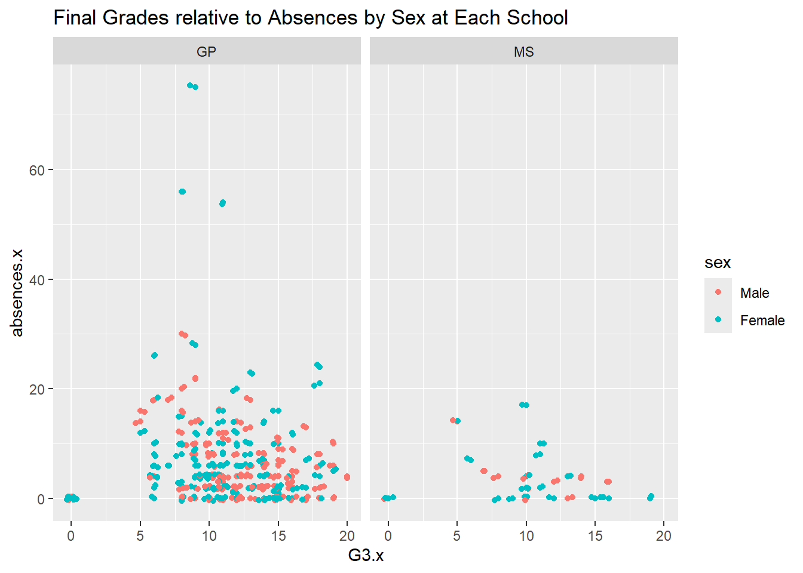
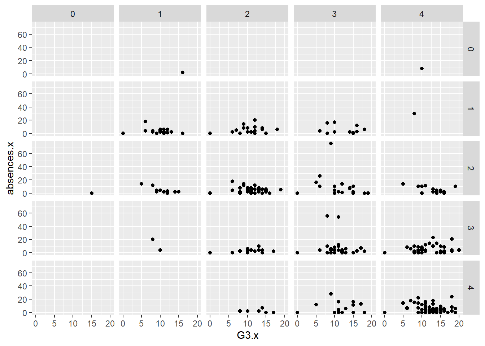

library(tidyverse)ST588 Homework 5
Before beginning any EDA, we’ll load the tidyverse library.
Task 1: Read in the Data and Modify
We’ll begin by reading in the Portugese Student data using code supplied by the authors.
d1=read.table("./student-mat.csv",sep=";",header=TRUE)
d2=read.table("./student-por.csv",sep=";",header=TRUE)
d3=merge(d1,d2,by=c("school","sex","age","address","famsize","Pstatus","Medu","Fedu","Mjob","Fjob","reason","nursery","internet"))
print(nrow(d3)) # 382 students[1] 382#code used to visualize data. Commented out to save space in output.
#head(d3)
#str(d3)Next, we’ll read in and combine the data using Tidyverse functions and make note of any issues. This will be and inner join on the same variables used by the authors above.
tidyD1<-read_delim("./student-mat.csv", delim=";")
tidyD2<-read_delim("./student-por.csv", delim=";")
tidyD3<-inner_join(tidyD1, tidyD2, by=c("school","sex","age","address","famsize","Pstatus","Medu","Fedu","Mjob","Fjob","reason","nursery","internet"))
print(nrow(tidyD3))[1] 382#code below used to visualize data stucture, commented out to save space in output.
#head(tidyD3)
#str(tidyD3)
#tidyD3The following warning was returned when doing dplyr inner join:
Warning: Detected an unexpected many-to-many relationship between x and y.
Next, we will do an inner join on all variables except G1, G2, G3, paid, and absences.
varExclude<-c("G1", "G2", "G3", "paid", "absences")
varBy<-subset(names(tidyD1), !names(tidyD1) %in% varExclude)
tidyD4<-inner_join(tidyD1, tidyD2, by=varBy)
head(tidyD4)# A tibble: 6 × 38
school sex age address famsize Pstatus Medu Fedu Mjob Fjob reason
<chr> <chr> <dbl> <chr> <chr> <chr> <dbl> <dbl> <chr> <chr> <chr>
1 GP F 18 U GT3 A 4 4 at_home teacher course
2 GP F 17 U GT3 T 1 1 at_home other course
3 GP F 15 U GT3 T 4 2 health servic… home
4 GP F 16 U GT3 T 3 3 other other home
5 GP M 16 U LE3 T 4 3 services other reput…
6 GP M 16 U LE3 T 2 2 other other home
# ℹ 27 more variables: guardian <chr>, traveltime <dbl>, studytime <dbl>,
# failures <dbl>, schoolsup <chr>, famsup <chr>, paid.x <chr>,
# activities <chr>, nursery <chr>, higher <chr>, internet <chr>,
# romantic <chr>, famrel <dbl>, freetime <dbl>, goout <dbl>, Dalc <dbl>,
# Walc <dbl>, health <dbl>, absences.x <dbl>, G1.x <dbl>, G2.x <dbl>,
# G3.x <dbl>, paid.y <chr>, absences.y <dbl>, G1.y <dbl>, G2.y <dbl>,
# G3.y <dbl>We’ll create function to mutate character variables into factors:
fktRize<-function(x) {
x |> mutate(
sex=factor(sex, levels=c("M", "F"), labels=c("Male" , "Female")),
Mjob=factor(Mjob, levels=c("at_home", "health", "other", "services", "teacher"), labels=c("Stay at Home Mom", "Health Care Professional", "Other", "Civil Servant", "Teacher")),
Fjob=factor(Fjob, levels=c("at_home", "health", "other", "services", "teacher"), labels=c("Stay at Home Dad", "Health Care Professional", "Other", "Civil Servant", "Teacher")),
guardian=factor(guardian, levels=c("mother", "father", "other"), labels=c("Mother", "Father", "Other"))
)
}Then we’ll use that function to do the variable transformations for the two sources’ datasets (tidyD1 and tidyD2), as well as the Joined Dataset (tidyD4).
#factorize tidyD1
td1 <- fktRize(tidyD1)
td2 <- fktRize(tidyD2)
td4 <- fktRize(tidyD4)
head(td4)# A tibble: 6 × 38
school sex age address famsize Pstatus Medu Fedu Mjob Fjob reason
<chr> <fct> <dbl> <chr> <chr> <chr> <dbl> <dbl> <fct> <fct> <chr>
1 GP Female 18 U GT3 A 4 4 Stay at … Teac… course
2 GP Female 17 U GT3 T 1 1 Stay at … Other course
3 GP Female 15 U GT3 T 4 2 Health C… Civi… home
4 GP Female 16 U GT3 T 3 3 Other Other home
5 GP Male 16 U LE3 T 4 3 Civil Se… Other reput…
6 GP Male 16 U LE3 T 2 2 Other Other home
# ℹ 27 more variables: guardian <fct>, traveltime <dbl>, studytime <dbl>,
# failures <dbl>, schoolsup <chr>, famsup <chr>, paid.x <chr>,
# activities <chr>, nursery <chr>, higher <chr>, internet <chr>,
# romantic <chr>, famrel <dbl>, freetime <dbl>, goout <dbl>, Dalc <dbl>,
# Walc <dbl>, health <dbl>, absences.x <dbl>, G1.x <dbl>, G2.x <dbl>,
# G3.x <dbl>, paid.y <chr>, absences.y <dbl>, G1.y <dbl>, G2.y <dbl>,
# G3.y <dbl>#td4Task 2: Summarize the Data (Very Basic EDA)
Based on the description of the variables on the website, all variables seem to make sense, eg. they are numeric where they should be numeric, character where they should be character, factor where should be factor, and binary where they should be binary.
We’ll check for missing values:
colSums(is.na(td4)) school sex age address famsize Pstatus Medu
0 0 0 0 0 0 0
Fedu Mjob Fjob reason guardian traveltime studytime
0 0 0 0 0 0 0
failures schoolsup famsup paid.x activities nursery higher
0 0 0 0 0 0 0
internet romantic famrel freetime goout Dalc Walc
0 0 0 0 0 0 0
health absences.x G1.x G2.x G3.x paid.y absences.y
0 0 0 0 0 0 0
G1.y G2.y G3.y
0 0 0 We see that there are no missing values! This matches the description of the dataset on the website where we sourced the data.
We can create contingency tables for the variables that were transformed to factors:
First, we’ll create a one-way contingency table to evaluate the counts of males and females from the study:
table(td4$sex)
Male Female
146 174 There are more females than males (174F vs 146M). This could possibly mean there are more females in the general population, but this is only an estimate, and is not strong evidence of this.
Next, we’ll create a 2-way contingency table to explore the Mother’s Job vs. Primary Guardian and Father’s Job vs. Guardian:
table(td4$Mjob, td4$guardian)
Mother Father Other
Stay at Home Mom 35 8 1
Health Care Professional 20 9 1
Other 75 35 6
Civil Servant 58 17 0
Teacher 49 5 1table(td4$Fjob, td4$guardian)
Mother Father Other
Stay at Home Dad 11 3 0
Health Care Professional 10 5 0
Other 138 31 8
Civil Servant 58 28 1
Teacher 20 7 0This is interesting…most of the mothers (35) that are stay at home moms are the primary guardian, however, most of the fathers (11) who are stay at home dads are not the primary guardian. Perhaps stay at home dad is not the best description! The mother is the primary guardian regardless of job category.
We’ll next create a 3-way contingency table to display the same information, with a different code chunk:
table(td4$Fjob, td4$Mjob, td4$guardian), , = Mother
Stay at Home Mom Health Care Professional Other
Stay at Home Dad 5 0 2
Health Care Professional 1 2 0
Other 20 10 62
Civil Servant 7 7 8
Teacher 2 1 3
Civil Servant Teacher
Stay at Home Dad 2 2
Health Care Professional 3 4
Other 27 19
Civil Servant 22 14
Teacher 4 10
, , = Father
Stay at Home Mom Health Care Professional Other
Stay at Home Dad 1 0 2
Health Care Professional 0 3 2
Other 3 4 19
Civil Servant 4 2 9
Teacher 0 0 3
Civil Servant Teacher
Stay at Home Dad 0 0
Health Care Professional 0 0
Other 4 1
Civil Servant 11 2
Teacher 2 2
, , = Other
Stay at Home Mom Health Care Professional Other
Stay at Home Dad 0 0 0
Health Care Professional 0 0 0
Other 0 1 6
Civil Servant 1 0 0
Teacher 0 0 0
Civil Servant Teacher
Stay at Home Dad 0 0
Health Care Professional 0 0
Other 0 1
Civil Servant 0 0
Teacher 0 0This 3-way table helps to visualize (poorly, it is hard to follow) the jobs of each parent when we separate the families by who is the primary guardian. We still see the same pattern where the mother is the primary guardian most of the time. The only combinations of parental jobs in which the father is the primary guardian more often is when both parents are healthcare professionals and when the father is a civil servant and the mother is “other”. This makes sense because healthcare jobs are notorious for long and odd hours which could disrupt any patterns that would occur with jobs that have “normal” work hours. It is hard to understand the Civil Servant Father/Other mother relationship due to lack of information about the mother’s job.
Next, we will create a conditional two-way table. This will seperate out the 3 way contingency tables above into manageable pieces.
#subset then table
td5 <- td4 |>
filter(guardian=="Mother")
td6 <- td4 |>
filter(guardian=="Father")
tbl1 <- table(td5$Fjob, td5$Mjob)
tbl2 <- table(td6$Fjob, td6$Mjob)
tbl1
Stay at Home Mom Health Care Professional Other
Stay at Home Dad 5 0 2
Health Care Professional 1 2 0
Other 20 10 62
Civil Servant 7 7 8
Teacher 2 1 3
Civil Servant Teacher
Stay at Home Dad 2 2
Health Care Professional 3 4
Other 27 19
Civil Servant 22 14
Teacher 4 10tbl2
Stay at Home Mom Health Care Professional Other
Stay at Home Dad 1 0 2
Health Care Professional 0 3 2
Other 3 4 19
Civil Servant 4 2 9
Teacher 0 0 3
Civil Servant Teacher
Stay at Home Dad 0 0
Health Care Professional 0 0
Other 4 1
Civil Servant 11 2
Teacher 2 2We see the same tables as from the 3-way contingency tables, but they are seperate now, and descriptive text could be placed in between!
We’ll create the same tables yet again with a different method, byt subsetting a 3-way table:
threeWay <- table(td4$Fjob, td4$Mjob, td4$guardian)
#mother as guardian
threeWay[ , ,1]
Stay at Home Mom Health Care Professional Other
Stay at Home Dad 5 0 2
Health Care Professional 1 2 0
Other 20 10 62
Civil Servant 7 7 8
Teacher 2 1 3
Civil Servant Teacher
Stay at Home Dad 2 2
Health Care Professional 3 4
Other 27 19
Civil Servant 22 14
Teacher 4 10#father as guardian
threeWay[ , ,2]
Stay at Home Mom Health Care Professional Other
Stay at Home Dad 1 0 2
Health Care Professional 0 3 2
Other 3 4 19
Civil Servant 4 2 9
Teacher 0 0 3
Civil Servant Teacher
Stay at Home Dad 0 0
Health Care Professional 0 0
Other 4 1
Civil Servant 11 2
Teacher 2 2#other a guardian
threeWay[ , ,3]
Stay at Home Mom Health Care Professional Other
Stay at Home Dad 0 0 0
Health Care Professional 0 0 0
Other 0 1 6
Civil Servant 1 0 0
Teacher 0 0 0
Civil Servant Teacher
Stay at Home Dad 0 0
Health Care Professional 0 0
Other 0 1
Civil Servant 0 0
Teacher 0 0Next for the factor variables, we’ll create 2-way contingency tables using group_by(), summarize(), and pivot_wider().
td4 |>
group_by(guardian, Mjob) |>
summarize(count = n()) |>
pivot_wider(names_from = Mjob, values_from = count)# A tibble: 3 × 6
# Groups: guardian [3]
guardian `Stay at Home Mom` `Health Care Professional` Other `Civil Servant`
<fct> <int> <int> <int> <int>
1 Mother 35 20 75 58
2 Father 8 9 35 17
3 Other 1 1 6 NA
# ℹ 1 more variable: Teacher <int>It seems that in each of these categories for the mother’s job, the mother is the primary guardian most of the time.
Now, we’ll plot some of these factors:
We’ll plot stacked bar graphs:
g <- ggplot(data = td4, aes(x = Mjob, fill = guardian))
g + geom_bar() +
labs(x = "Mother's Job")+
scale_fill_discrete("Guardian") +
scale_x_discrete(labels = function(x) str_wrap(x, width = 10)) +
ggtitle("Primary Guardian Based on Mother's Job")
The mother is clearly the guardian in most cases regardless of the mother’s job!
This helps the reader to visualize that the mother is the primary guardian most of the time regardless of her profession
Then, we’ll plot a side-by-side bar graph to show the mother is the primary guardian in most cases:
g2 <- ggplot(data = td4, aes(x = guardian))
g2 + geom_bar() +
labs(x = "Guardian") +
ggtitle("Parent as Primary Guardian")
This bar graph makes it even more clear that the mother is most often the primary caretaker.
Numeric Variables
First, we’ll calculate measures of center and spread (mean and standard deviation) for three numberic variables grouped by sex.
varChoice <- c("age", "absences.x", "G3.x")
td4 |>
summarize(across(varChoice,
list("mean" = ~ mean(.x, na.rm = TRUE), "sd" = ~ sd(.x, na.rm = TRUE)), .names = "{.fn}_{.col}"))# A tibble: 1 × 6
mean_age sd_age mean_absences.x sd_absences.x mean_G3.x sd_G3.x
<dbl> <dbl> <dbl> <dbl> <dbl> <dbl>
1 16.5 1.14 5.41 7.84 11.0 4.30Next, we’ll subset by school (GP) and calculate the same summaries:
varChoice <- c("age", "absences.x", "G3.x")
GP <- td4 |>
filter(school == "GP") |>
summarize(across(varChoice,
list("mean" = ~ mean(.x, na.rm = TRUE), "sd" = ~ sd(.x, na.rm = TRUE)), .names = "{.fn}_{.col}"))
GP# A tibble: 1 × 6
mean_age sd_age mean_absences.x sd_absences.x mean_G3.x sd_G3.x
<dbl> <dbl> <dbl> <dbl> <dbl> <dbl>
1 16.4 1.10 5.64 8.10 11.2 4.27The statistics appear, on the surface, to be similar to the pooled statistics for both schools.
Next, we’ll group by sex and calculate the same stats as for GP.
varChoice <- c("age", "absences.x", "G3.x")
GPsex <- td4 |>
filter(school == "GP") |>
group_by(sex) |>
summarize(across(varChoice,
list("mean" = ~ mean(.x, na.rm = TRUE), "sd" = ~ sd(.x, na.rm = TRUE)), .names = "{.fn}_{.col}"))
GPsex# A tibble: 2 × 7
sex mean_age sd_age mean_absences.x sd_absences.x mean_G3.x sd_G3.x
<fct> <dbl> <dbl> <dbl> <dbl> <dbl> <dbl>
1 Male 16.3 1.16 5.10 5.55 12.0 3.96
2 Female 16.5 1.03 6.12 9.80 10.5 4.43Males seem to have fewer absences and higher final grades.
Next, we’ll calculate the same stats across both sex and studytime:
varChoice <- c("age", "absences.x", "G3.x")
GPsexT <- td4 |>
filter(school == "GP") |>
group_by(sex, studytime) |>
summarize(across(varChoice,
list("mean" = ~ mean(.x, na.rm = TRUE), "sd" = ~ sd(.x, na.rm = TRUE)), .names = "{.fn}_{.col}"))
GPsexT# A tibble: 8 × 8
# Groups: sex [2]
sex studytime mean_age sd_age mean_absences.x sd_absences.x mean_G3.x
<fct> <dbl> <dbl> <dbl> <dbl> <dbl> <dbl>
1 Male 1 16.2 1.21 5.38 6.40 11.8
2 Male 2 16.3 1.09 5.35 5.52 11.7
3 Male 3 16.7 1.32 4 3.61 13.9
4 Male 4 15.5 0.972 3.6 2.95 11.7
5 Female 1 16.0 0.921 7.29 7.14 11.3
6 Female 2 16.5 1.01 7 12.3 9.89
7 Female 3 16.6 0.994 4.14 5.42 11.1
8 Female 4 16.9 1.26 4.62 4.13 11.1
# ℹ 1 more variable: sd_G3.x <dbl>It seems that absences decrease for students who study more, but grades do not necessarily get better with more time spent studying.
Next we’ll select all numeric values and create a correlation matrix for these numeric obserations:
corM <- td4 |>
select(where(is.numeric))
cor(corM) age Medu Fedu traveltime studytime
age 1.000000000 -0.100949786 -0.107245313 0.160281754 0.043881028
Medu -0.100949786 1.000000000 0.621523869 -0.218794954 0.045425978
Fedu -0.107245313 0.621523869 1.000000000 -0.193978042 -0.039289626
traveltime 0.160281754 -0.218794954 -0.193978042 1.000000000 -0.103243249
studytime 0.043881028 0.045425978 -0.039289626 -0.103243249 1.000000000
failures 0.243429617 -0.125608045 -0.157496645 0.104521138 -0.179515785
famrel 0.049940980 -0.067657746 -0.047260992 -0.027275744 0.001381660
freetime -0.045824466 0.004013326 -0.001258667 -0.055899592 -0.091829632
goout 0.150794790 0.065832096 0.050593936 0.006559725 -0.009403345
Dalc 0.113952023 0.062866542 0.039126588 0.161272613 -0.172278644
Walc 0.156817685 -0.004099434 0.023315814 0.105381347 -0.232402574
health -0.113225976 -0.011497172 0.067152933 0.020869407 -0.040979063
absences.x 0.143925170 0.099832689 0.024617771 -0.001464243 -0.082387919
G1.x -0.110379348 0.193071603 0.175557917 -0.088080745 0.125691378
G2.x -0.186187399 0.188735230 0.150418214 -0.184594967 0.089030600
G3.x -0.206031862 0.187754424 0.141990610 -0.165110961 0.045402243
absences.y 0.047331821 0.063530536 0.086614161 0.054308059 -0.134969383
G1.y -0.050549678 0.181423706 0.115531025 -0.178191662 0.229739293
G2.y 0.029366456 0.189642017 0.136994424 -0.179611557 0.231059730
G3.y -0.009103257 0.158979933 0.107807478 -0.153616466 0.238553746
failures famrel freetime goout Dalc
age 0.24342962 0.04994098 -0.045824466 0.150794790 0.11395202
Medu -0.12560804 -0.06765775 0.004013326 0.065832096 0.06286654
Fedu -0.15749664 -0.04726099 -0.001258667 0.050593936 0.03912659
traveltime 0.10452114 -0.02727574 -0.055899592 0.006559725 0.16127261
studytime -0.17951579 0.00138166 -0.091829632 -0.009403345 -0.17227864
failures 1.00000000 0.09437401 0.089757964 0.097119445 0.16213974
famrel 0.09437401 1.00000000 0.090946059 0.033058834 -0.05737989
freetime 0.08975796 0.09094606 1.000000000 0.243271162 0.20497133
goout 0.09711944 0.03305883 0.243271162 1.000000000 0.25703214
Dalc 0.16213974 -0.05737989 0.204971335 0.257032140 1.00000000
Walc 0.16736348 -0.12634267 0.119021094 0.378591514 0.64989386
health 0.04225577 0.13959656 0.070864701 -0.049000564 0.05996329
absences.x 0.12006863 -0.04806901 -0.046300383 0.078848996 0.15159884
G1.x -0.19581035 -0.05618075 -0.017100766 -0.115882796 -0.09641793
G2.x -0.16669179 -0.08710139 -0.029677027 -0.158978350 -0.05916707
G3.x -0.14303203 -0.01797570 -0.006516202 -0.118423233 -0.04696434
absences.y 0.13424264 -0.02955203 -0.011429255 0.128521823 0.10753855
G1.y -0.26927657 -0.06419546 -0.085629896 -0.071905764 -0.23398211
G2.y -0.26992597 -0.02441686 -0.087231866 -0.091151551 -0.25300707
G3.y -0.32775690 -0.01282948 -0.110638817 -0.073423265 -0.27992305
Walc health absences.x G1.x G2.x
age 0.156817685 -0.113225976 0.143925170 -0.11037935 -0.18618740
Medu -0.004099434 -0.011497172 0.099832689 0.19307160 0.18873523
Fedu 0.023315814 0.067152933 0.024617771 0.17555792 0.15041821
traveltime 0.105381347 0.020869407 -0.001464243 -0.08808075 -0.18459497
studytime -0.232402574 -0.040979063 -0.082387919 0.12569138 0.08903060
failures 0.167363479 0.042255769 0.120068630 -0.19581035 -0.16669179
famrel -0.126342672 0.139596565 -0.048069014 -0.05618075 -0.08710139
freetime 0.119021094 0.070864701 -0.046300383 -0.01710077 -0.02967703
goout 0.378591514 -0.049000564 0.078848996 -0.11588280 -0.15897835
Dalc 0.649893859 0.059963287 0.151598836 -0.09641793 -0.05916707
Walc 1.000000000 0.070450703 0.208026186 -0.07964360 -0.06540510
health 0.070450703 1.000000000 0.012122515 -0.06155381 -0.07666718
absences.x 0.208026186 0.012122515 1.000000000 -0.06946116 -0.07580245
G1.x -0.079643599 -0.061553810 -0.069461164 1.00000000 0.86588796
G2.x -0.065405098 -0.076667185 -0.075802450 0.86588796 1.00000000
G3.x -0.027623053 -0.047513775 -0.028118470 0.81859418 0.91357599
absences.y 0.150366322 -0.001077612 0.563815592 -0.08760610 -0.12636236
G1.y -0.158160549 -0.126244006 -0.092477610 0.59293522 0.54300736
G2.y -0.183295800 -0.170419288 -0.145164017 0.59517224 0.56521350
G3.y -0.182606733 -0.162249671 -0.135726385 0.54388734 0.49603265
G3.x absences.y G1.y G2.y G3.y
age -0.206031862 0.047331821 -0.05054968 0.02936646 -0.009103257
Medu 0.187754424 0.063530536 0.18142371 0.18964202 0.158979933
Fedu 0.141990610 0.086614161 0.11553102 0.13699442 0.107807478
traveltime -0.165110961 0.054308059 -0.17819166 -0.17961156 -0.153616466
studytime 0.045402243 -0.134969383 0.22973929 0.23105973 0.238553746
failures -0.143032028 0.134242644 -0.26927657 -0.26992597 -0.327756897
famrel -0.017975700 -0.029552034 -0.06419546 -0.02441686 -0.012829483
freetime -0.006516202 -0.011429255 -0.08562990 -0.08723187 -0.110638817
goout -0.118423233 0.128521823 -0.07190576 -0.09115155 -0.073423265
Dalc -0.046964337 0.107538550 -0.23398211 -0.25300707 -0.279923052
Walc -0.027623053 0.150366322 -0.15816055 -0.18329580 -0.182606733
health -0.047513775 -0.001077612 -0.12624401 -0.17041929 -0.162249671
absences.x -0.028118470 0.563815592 -0.09247761 -0.14516402 -0.135726385
G1.x 0.818594184 -0.087606100 0.59293522 0.59517224 0.543887345
G2.x 0.913575991 -0.126362360 0.54300736 0.56521350 0.496032649
G3.x 1.000000000 -0.116640460 0.52288461 0.54545279 0.475956497
absences.y -0.116640460 1.000000000 -0.09864117 -0.12070727 -0.071452010
G1.y 0.522884610 -0.098641173 1.00000000 0.88415041 0.825414320
G2.y 0.545452789 -0.120707273 0.88415041 1.00000000 0.894309821
G3.y 0.475956497 -0.071452010 0.82541432 0.89430982 1.000000000There really is not much correlation between any variables, except for it seems that later grades are strongly correlated with earlier grades.
Create a histogram for final grade by sex:
g1 <- ggplot(td4, aes(x = G3.x, color=sex))
g1 + geom_histogram(sex="Male",) +
geom_histogram(sex="Female")
This is a little difficult to understand and seems to contradict the counts of each sex. It looks like there are more final grades in total for males than for females, but that can’t be true since there are more females than males. It is probably because the bin width distorts the view.
Next we’ll plot kernal density plot for the same data as above, final grades for males vs. females:
g2 <- ggplot(td4, aes(x = G3.x, color=sex))
g2 + geom_density(kernal="gaussian", sex="Male",) +
geom_density(kernal="gaussian", sex="Female")
This makes more sense, as the area under Female appears that it could be larger than the area under Male. It seems like most males get higher grades than females, but not by much.
Next we’ll plot box plots of the same comparison of grades for females vs. males.
g3 <- ggplot(td4, aes(x = G3.x, color=sex))
g3 + geom_boxplot(sex="Male")
Some students appear to have either not received a final grade, or did very poorly, for both males and females (outliers at 0).
Next, we’ll create two scatterplots relating G3.x to other numeric variables. First, we’ll plot studytime by G3.x:
g4 <- ggplot((td4), aes(x = G3.x, y = studytime, color = sex))
g4 + geom_point() +
geom_jitter() +
labs(title="Final Grades relative to Study Time by Sex")
This is hard to make sense of visually, there is a lot going on. Perhaps a regression line would make this easier to understand.
Then we’ll plot absences.x by G3.x:
g5 <- ggplot((td4), aes(x = G3.x, y = absences.x, color = sex))
g5 + geom_point() +
geom_jitter() +
labs(title="Final Grades relative to Absences by Sex")
Higher grades appear to be achieved by students who have fewer absences for both sexes, in general.
Next, we’ll recreate the graph above and use faceting to seperate by school:
g6 <- ggplot((td4), aes(x = G3.x, y = absences.x, color = sex))
g6 + geom_point() +
geom_jitter() +
labs(title="Final Grades relative to Absences by Sex at Each School") +
facet_wrap(~ school)
There are more students that attended GP vs. MS, but it appears that at both schools, higher grades are acheived by students with fewer absences, in general. Females had the highest final grades at MS, whereas, males had the highest grades at GP.
Last, we’ll use facet_grid to plot final grade for all combinations each level of father’s education level and mother’s education level;
g7 <- ggplot(td4, aes(G3.x, absences.x))
g7 + geom_point() +
facet_grid(vars(Fedu), vars(Medu)) +
labs(title="Influence of Parents Education Levels on Final Grade relative to Absences")
Regardless of the parents’ education level, there seems to be some peak of absences near a final grade of 10, with higher final grades being achieved by students who missed fewer days of school (generally).